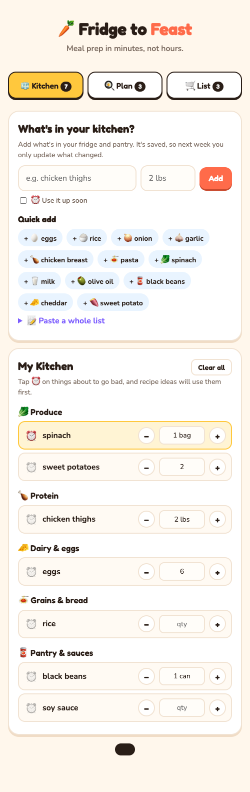
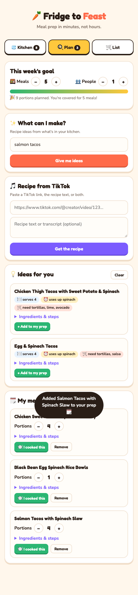
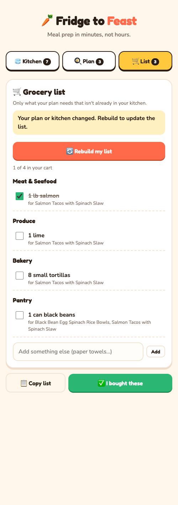

Meal prep for busy people: tell it what's in your fridge, pick recipes (or bring one from TikTok), and get a grocery list with exact amounts. Then update your kitchen in one tap so it's ready for next week.
Current Status: Build 2: local meal prep app (pivoted from the Build 1 TikTok extractor)
Demo: ① Add what's in your kitchen (mark things to use up soon) → ② Plan: get recipe ideas from what you have, or import a recipe from a TikTok link → set portions for the week → ③ Grocery list with specific amounts, minus what you already have → ④ "I bought these" moves groceries into your kitchen, "I cooked this" takes used-up items out. Screenshots from a real run with the free model below.



Who is this for? Busy people who want to meal prep for the week but don't have time to figure out what to cook, check what's already in the fridge, and work out exactly what to buy.
The painful "Before" workflow: Today users dig through the fridge and pantry, scroll TikTok or Google for recipes, rewatch videos to write down ingredients, guess how much to buy for the whole week, and then do it all again next week from scratch. Food goes bad because nobody remembers what needed using up.
The "After" workflow with this product: (1) Keep a saved list of what's in your kitchen, with a flag on things to use up soon, plus pantry staples (spices, oils, sauces) you set once and never re-enter. (2) Build a meal prep plan by asking "what can I make with what I have?" or by bringing a recipe you want: a TikTok link, a recipe you type or paste, or a screenshot from any website. (3) Get a grocery list with specific amounts, scaled to how many meals and people you're prepping for, minus what you already have. (4) Tap "I bought these" or "I cooked this" to keep your kitchen up to date for next time.
Riskiest Assumption: That a free AI model can turn a meal plan into a grocery list with correct, store-realistic amounts: scaling recipes to the right number of portions, combining the same ingredient across recipes, and subtracting what's already in the kitchen when units don't match ("1 bag spinach" vs "3 cups"). Early runs showed real problems ("0.125 tsp cumin" instead of "1 jar", "1 lime lime"), which the prompt and page now guard against. Second risk: busy people will only come back if keeping the kitchen list up to date is close to effortless. Third: free models are slow (often 1–2 minutes) and sometimes return an empty answer, so the server retries once. TikTok captions still often leave out steps, so pasted text remains a fallback.
Simple Architecture: [Kitchen list, pantry staples, plan and grocery list saved in the browser (localStorage)] → [Local Node.js server, no packages] → [Free AI model via OpenRouter, three JSON jobs: /api/suggest recipe ideas from the kitchen, /api/extract recipe from a TikTok caption, typed/pasted text, or a screenshot (OpenRouter's free router picks an image-capable free model when a screenshot is attached), /api/grocery scaled grocery list minus the kitchen] → [Web page: Kitchen / Plan / Grocery List tabs; "I bought these" and "I cooked this" update the kitchen]